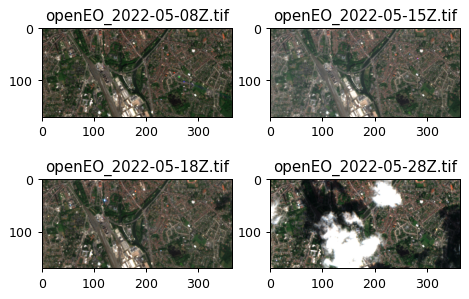

import openeoUsing openEO Batch Jobs To Run Large and Heavy Workflows
Most of the simple, basic openEO usage examples show synchronous execution of process graphs: you submit a process graph with a HTTP request and receive the result as direct response of that same request. This is only feasible if the processing doesn’t take too long (a couple of minutes at most).
For the heavier work, covering large regions of interest, long time series, more intensive processing, etc, you have to use batch jobs.
This notebook shows how to programmatically create and interact with batch job using the openEO Python client library.
Set up
Import openeo package and establish an authenticated connection to Copernicus Data Space Ecosystem openEO back-end.
connection = openeo.connect(url="openeo.dataspace.copernicus.eu")
connection.authenticate_oidc()Authenticated using refresh token.<Connection to 'https://openeo.dataspace.copernicus.eu/openeo/1.2/' with OidcBearerAuth>Build data cube
Start with a simple data cube: small spatiotemporal slice of SENTINEL2_L2A data:
cube = connection.load_collection(
"SENTINEL2_L2A",
bands=["B04", "B03", "B02"],
temporal_extent=("2022-05-01", "2022-05-30"),
spatial_extent={
"west": 3.202609,
"south": 51.189474,
"east": 3.254708,
"north": 51.204641,
"crs": "EPSG:4326",
},
max_cloud_cover=50,
)Set up output format to be GeoTIFF:
cube = cube.save_result(format="GTiff")Run as Batch Job
The easiest way to run our processing as a batch job is using the execute_batch() helper, which takes care of creating a batch job, starting it, and keep polling its status until it’s finished (or failed).
While not necessary, it is recommended to give your batch job a descriptive title so it’s easier to identify in your job listing.
job = cube.execute_batch(title="Slice of S2 data")0:00:00 Job 'j-26071513265043a088e327015159226b': send 'start'
0:00:02 Job 'j-26071513265043a088e327015159226b': queued (progress 0%)
0:00:07 Job 'j-26071513265043a088e327015159226b': queued (progress 0%)
0:00:14 Job 'j-26071513265043a088e327015159226b': queued (progress 0%)
0:00:22 Job 'j-26071513265043a088e327015159226b': queued (progress 0%)
0:00:32 Job 'j-26071513265043a088e327015159226b': running (progress N/A)
0:00:44 Job 'j-26071513265043a088e327015159226b': running (progress N/A)
0:00:59 Job 'j-26071513265043a088e327015159226b': running (progress N/A)
0:01:19 Job 'j-26071513265043a088e327015159226b': running (progress N/A)
0:01:42 Job 'j-26071513265043a088e327015159226b': running (progress N/A)
0:02:12 Job 'j-26071513265043a088e327015159226b': finished (progress 100%)If you need a bit more control over the lifetime of a batch job, you can do each step manually, e.g. - create a job with job = cube.create_job() - start a job with job.start_job() - wait until job.status() reaches "finished"
Inspecting a Job
A batch job on a back-end is fully identified by its job id. In case of the job we created above:
job.job_id'j-26071513265043a088e327015159226b'It’s recommended to properly take note of the batch job id. It allows you to “reconnect” to your job (using connection.job(job_id)) on the back-end, even if it was created at another time, by another script/notebook or even with another openEO client.
A batch job typically takes some time to finish, and you can check its status with the status() method.
job.status()'finished'Batch job logs can be fetched with job.logs(). If you prefer a graphical, web-based interactive environment to manage and monitor your batch jobs, feel free to switch to an openEO web editor like openeo.dataspace.copernicus.eu at any time.
job.logs()Fetch Batch Job Results
The result of a finished batch job consists of several elements: - a STAC-compatible description (metadata) of the batch job results - one or more output files (e.g. multiple GeoTIFF or netCDF assets)
You can get a handle to these results with get_results():
results = job.get_results()
resultsIn the general case, when you have one or more result files (also called “assets”), the easiest option to download them is using download_files() (plural) where you just specify a download folder (otherwise the current working directory will be used by default).
results.download_files("output/batch_job")[PosixPath('output/batch_job/openEO_2022-05-08Z.tif'),
PosixPath('output/batch_job/openEO_2022-05-15Z.tif'),
PosixPath('output/batch_job/openEO_2022-05-18Z.tif'),
PosixPath('output/batch_job/openEO_2022-05-28Z.tif'),
PosixPath('output/batch_job/job-results.json')]Visualize the result
import pathlib
import rasterio
import matplotlib.pyplot as pltfig, axes = plt.subplots(figsize=(6, 4), nrows=2, ncols=2, dpi=90)
for i, path in enumerate(sorted(pathlib.Path("output/batch_job/").glob("*tif"))[:4]):
data = rasterio.open(path).read()
ax = axes[i // 2, i % 2]
ax.imshow((data.transpose(1, 2, 0) / 3000).clip(0, 1))
ax.set_title(path.name)